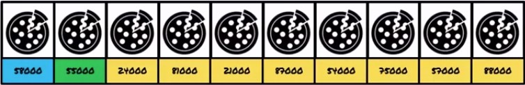
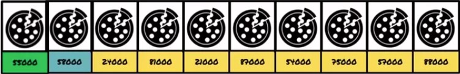
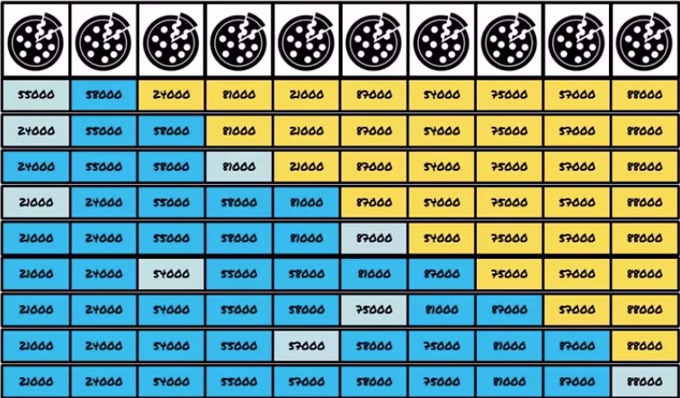

Actividad
Seguir los siguientes lineamientos para llevar a cabo esta actividad:
1. Definir una parte ordenada
2. Tomar el primero de la parte desordenada
3. Agregarlo ordenadamente en la parte ordenada
4. Repetir hasta ordenar todos
Ejemplo de guia
Definimos una parte ordenada:
tomamos el primero de la parte desordenada:

lo agregamos ordenadamente en la parte desordenada:

repetimos hasta ordenar todos:

El código sería el siguiente:
public class Cocinero{
private ArrayList[Pizza] pizzas;
public void ordenarPizzasPorPrecio(){
Tomamos el primero de la parte desordenada y lo agregamos ordenadamente en la parte ordenada:
boolean agregado = false;
for(int i=1; i< pizzas.size(); i++){
for(int j=1; j>0 && !agregado; j--){
Pizza uno=pizzas.get(j);
Pizza dos=pizzas.get(j-1);
if(uno.darPrecio() < dos.darPrecio()){
pizzas.set(j, dos);
pizzas.set(j-1, uno);
}
else
agregado=true;
}
}
}
}
• Organiza la siguiente lista usando el metodo de inserción: 4 - 3 - 5 - 2 - 1.
• Hacer un programa que capture una arreglo, lo ordene por el método de Inserción y lo imprima ordenado y desordenadamente.
• Escribe un programa que realice capture nombres y los ordene en orden de A—Z. Anota el método para que se imprima un arreglo de nombres en orden descendente, es decir de la Z a la A.